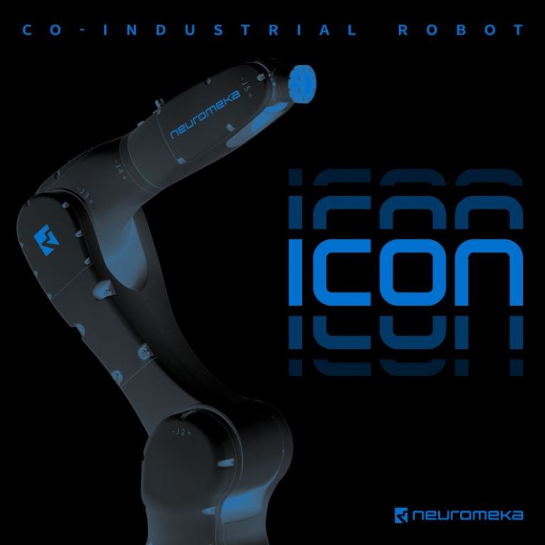

ICoN
'ICoN(아이콘)'은 뉴로메카 협동로봇 'Indy(인디)'의 안전기능과 사용 편의 기능이 적용된
차세대 협동형 산업용 로봇입니다. 진화된 충돌 감지 알고리즘,상태표시등과 레이저 스캐너 등의
주변 안전장치를 추가하여 기존의 산업용 로봇에는 없었던 안전성을 대폭 향상 시켰습니다.
임피던스 제어를 통한 직접교시,태블릿 기반의 티치펜던트 앱 'CONTY(콘티)'
그리고 힘센서 기반 리드스루(lead-through)장치 추가를 통해 쉽고 빠르게
프로그래밍이 가능합니다 .
